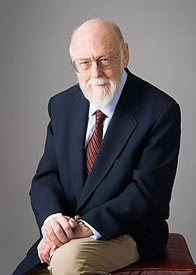

Si Raymond Carhart a inventé l'audiologie, James Jerger lui a donné ses institutions. Une académie, un journal, des méthodes de diagnostic encore utilisées aujourd'hui : il a passé sept décennies à transformer une pratique en profession.
Nous pouvons dire à haute voix à ces géants du passé, sur les épaules desquels nous nous appuyons aujourd'hui, que votre travail n'a pas été vain. Nous avons bâti sur vos fondations solides. Le domaine que vous avez imaginé est une réalité.
James Jerger
Les débuts
Né en 1928 à Milwaukee, dans le Wisconsin, James Jerger étudie à la Northwestern University : baccalauréat en 1951, maîtrise en 1952, doctorat en 1954. Il rejoint la faculté de Northwestern et devient rapidement directeur du laboratoire de recherche en audiologie.
Il part ensuite pour Houston, où il est directeur de recherche au Houston Speech and Hearing Center et professeur au Baylor College of Medicine.

Une académie pour une profession
En 1988, James Jerger fonde l'American Academy of Audiology (AAA), pour donner une voix indépendante aux audiologistes et promouvoir la recherche et la pratique clinique. Il en devient le premier président. L'association joue depuis un rôle essentiel dans l'unification et la professionnalisation de l'audiologie.
L'année suivante, en 1989, il crée le Journal of the American Academy of Audiology (JAAA) et en devient le premier rédacteur en chef — un rôle qu'il occupera pendant plus de vingt-cinq ans. La revue publie des recherches de pointe sur l'audiologie clinique et la science auditive, et établit des normes pour la recherche comme pour la pratique.
Ce qu'il a apporté au diagnostic
James Jerger a publié plus de 350 articles couvrant divers aspects de l'audiologie moderne. Trois contributions sont restées dans la pratique quotidienne :
- L'audiométrie d'impédance — des techniques pour évaluer la fonction de l'oreille moyenne et diagnostiquer les pathologies auditives.
- Le test en batterie — un concept essentiel pour différencier les atteintes cochléaires des atteintes rétrocochléaires.
- La vérification croisée — un principe clé qui consiste à confirmer les résultats d'un test auditif à l'aide de plusieurs méthodes de diagnostic.
Les distinctions
- Raymond Carhart Memorial Award de l'American Auditory Society (1976)
- Honors of the American Speech-Language-Hearing Association (1979)
- Lifetime Career Research Award de l'AAA (1993) — qui porte désormais son nom
- Presidential Citation de l'American Academy of Otolaryngology-Head and Neck Surgery (1994)
- Aram Glorig Award de l'International Society of Audiology (2004)
- Lifetime Achievement Award de l'American Auditory Society (2008)
Former la génération suivante
À l'Université du Texas à Dallas, James Jerger a dirigé un laboratoire actif en audiologie et encadré de nombreux doctorants, jouant un rôle important dans la formation de la génération suivante d'audiologistes.
Il est aussi l'auteur de onze livres, parmi lesquels Audiological Research Over Six Decades, récit de ses contributions et de l'évolution de la discipline ; Audiology in the USA, exploration des développements historiques et contemporains ; et Hearing Disorders in the Elderly, analyse approfondie des troubles auditifs liés au vieillissement.
Dernières années
Retraité à Portland, dans l'Oregon, avec son épouse Susan Jerger, il a continué d'écrire et d'enseigner. Il s'est éteint le 24 juillet 2024, à 96 ans, et a reçu de nombreux hommages de la communauté audiologique.
Ses concepts de test en batterie et de vérification croisée sont encore utilisés aujourd'hui pour assurer des diagnostics précis et complets. Les audiologistes qu'il a formés perpétuent son héritage scientifique et clinique.